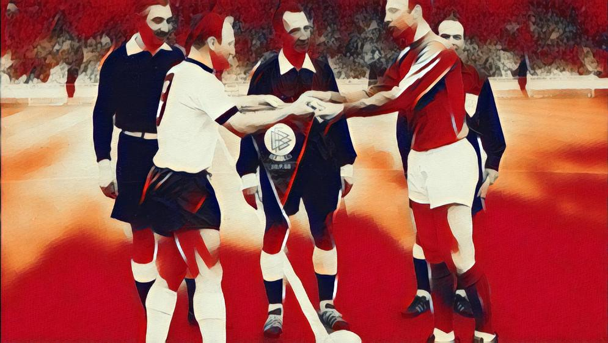
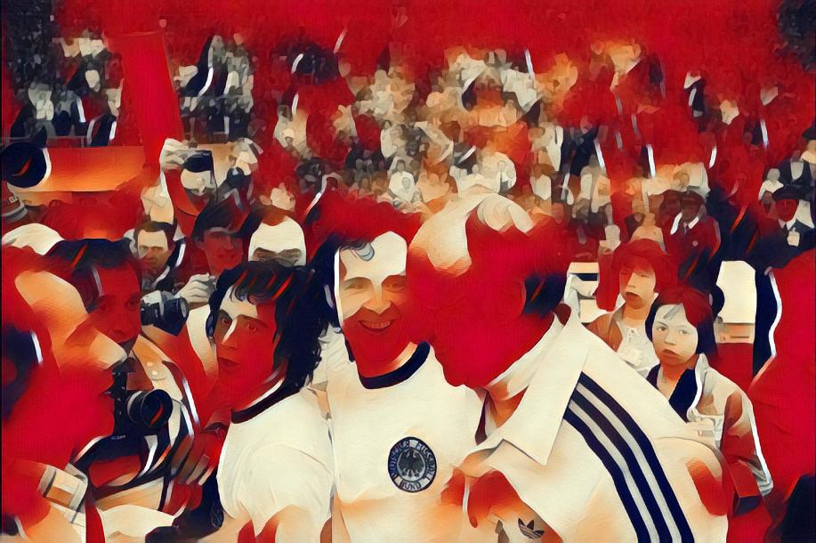
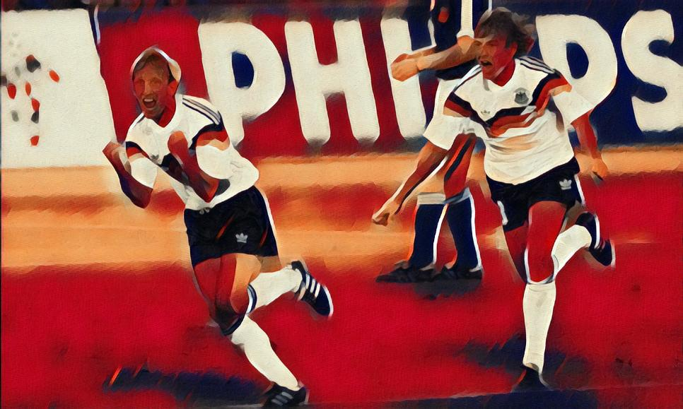
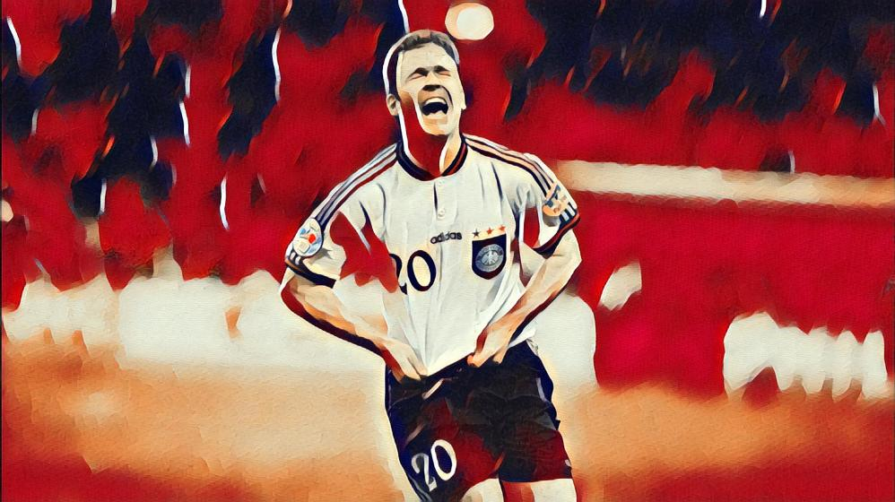
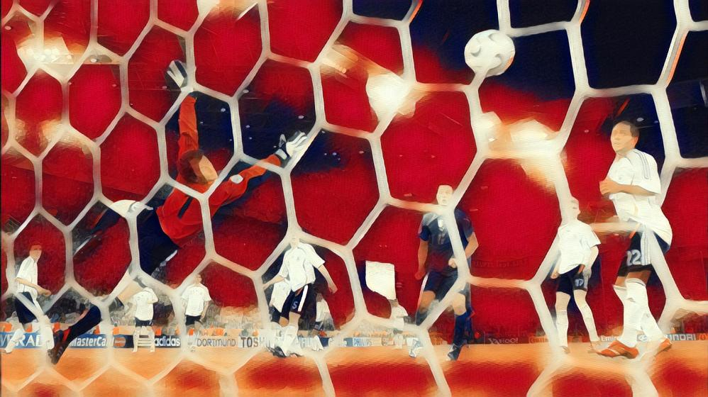
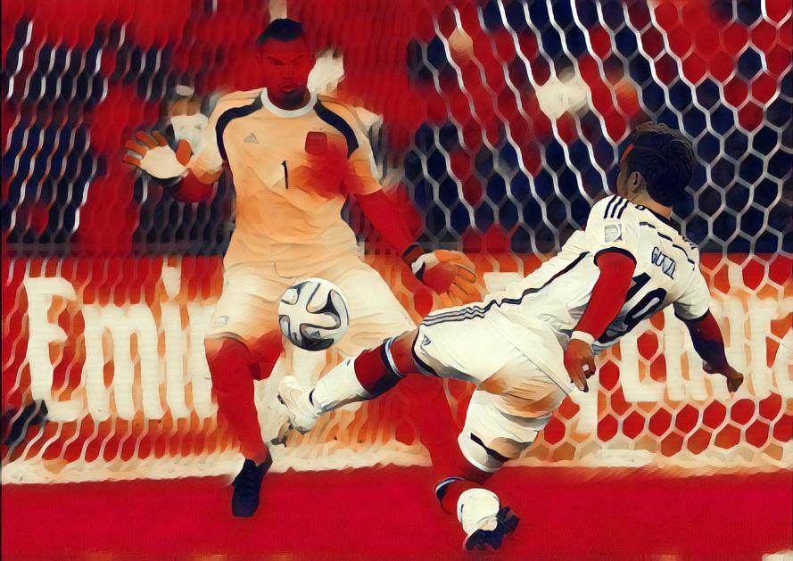

Klassiker der deutschen Fußballhistorie durch die xG-Lupe
Expected Goals erlangen in letzter Zeit immer mehr an Beliebtheit. Höchste Zeit uns einmal die xG-Werte der größten Partien der deutschen Fußballhistorie anzusehen.
Was sind expected Goals?
Expected Goals (erwartete Tore) oder auch xG ist eine Statistik, die versucht die Qualität eines Torschusses in einem einzigen Wert zusammenzufassen. Sie hilft dabei eine vom Ergebnis unabhängige Aussage über die Leistung beider Teams (oder auch einzelner Spieler) zu treffen, indem sie die Varianz des Torabschlusses entfernt. Ein xG-Wert von 0.32 bedeutet, dass aus 100 Schüssen aus ähnlicher Distanz und Spielsituation im Durchschnitt 32 Tore fallen.
Schwächen dieser Statistik sind, dass dass nur Schüsse erfasst werden, also gefährliche Situationen ohne Abschluss (Grätschen in letzter Sekunde, verpasste Hereingaben, …) ignoriert werden. Weiter kann die Statistik auch nur erfassen, was gemessen wird: Daten wie Schusshöhe oder Position des Torwarts werden oft ignoriert. Im Durchschnitt sind xG aber dennoch hilfreich um Partien nochmal durch eine andere Linse als das blanke Resultat zu durchleuchten.
Seit dem Ende der letzten Saison werden xG-Werte nun auch während der Liveübertragung von Bundesligapartien eingeblendet. Hier findet ihr eine detaillierte Erklärung dazu. Wer tiefer in die Materie einsteigen möchte findet hier eine detaillierte Anleitung, wie man so ein Modell implementiert.
xG-Timelines
xG-Timelines sind Darstellungen der kumulativen xG-Werte (y-Achse) beider Teams über die Dauer einer Partie (x-Achse). Jede vertikale Stufe entspricht einem Torschuss mit einem entsprechenden xG-Wert. Druckphasen der Teams lassen sich so besonders gut erkennen. Tore werden häufig nochmal durch eine weiteren Marker hervorgehoben.

Shotmaps

Shotmaps konzentrieren sich auf Schusspositionen und können Aufschluss über bevorzugte Schusslagen von Teams oder Spielern geben. xG-Werte und Resultate (gehalten, geblockt, Tor, …) können durch Farbe oder Form hervorgehoben werden. Im folgenden Beispiel wird die Qualität (xG) eines Schusses farblich hervorgehoben. Tore werden durch eine Raute dargestellt.
Nun analysieren wir einige Klassiker der deutschen Fußballgeschichte durch die expected Goals-Lupe und der Hilfe von xG-Timelines und Shotmaps.
WM-Finale 1966

Das Finale 1966 ist durch sehr viele Torschüsse geprägt und bis zur 70. Minute mit einem 1:1 sehr ausgeglichen. Dann erarbeiten sich die Engländer ein Chancenvorteil und in der 78. Minute auch die Führung.

England drückt weiter, doch Deutschland schafft den Ausgleich in letzter Sekunde und rettet sich in die Verlängerung.
Doch auch dort bleibt England die bessere Mannschaft, bis in der 101. Minute das berühmte Wembleytor durch Geoff Hurst fällt. Deutschland schafft es nicht mehr gefährlich vors Tor und muss in der 120. Minute auch noch das 4:2 hinnehmen. England ist Weltmeister und nach xG auch verdient: 1.91 - 1.47
WM-Finale 1974


Die Anfangsphase des Endspiels 1974 wird durch zwei frühe Elfmeter bestimmt. Schon in der 2. Minute verwandelt Neeskens für die Niederlande, Breitner gleicht in der 25. Spielminute nach Foul an Hölzenbein aus.
Nach dem Ausgleich haben die Deutschen nun mehr vom Spiel belohnen sich durch Drehschuss Gerd Müller in der 43. Minute (xG: 0.25). In der zweiten Halbzeit ziehen sich die Deutschen nun vermehrt zurück und lauern auf Konter, die allerdings nicht sauber zu Ende gespielt werden.
Die Niederlande hat einige gute Chancen auf den Ausgleich: Johnny Rep vergibt die Beste aus kürzester Distanz in der 77. Minute. Nach langem Zittern kann sich die deutsche Mannschaft am Ende glücklich schätzen die Verlängerung zu vermeiden und den zweiten Weltmeistertitel zu feiern. xG-Bilanz: 1.54 - 2.17
WM-Finale 1990

Ein etwas anderes Finale spielt sich im Juli 1990 in Rom ab. Argentinien geht ersatzgeschwächt ins Endspiel und vermisst vier Spieler mit Sperren aus dem Halbfinale.

Deutschland ist über das gesamt Spiel drückend überlegen und erarbeitet sich eine Schussbilanz von 17:1. Der einzige Schuss Argentinies ist ein direkter Freistoß von Diego Maradona.
Rudi Völler vergibt die zwei besten Chancen aus dem Spiel heraus, so dass eine strittige Elfmeterentscheidung in der 85. Minute für die Deutschen herhalten muss. Durch einen verweigerten Elfmeter nach Foul an Augenthaler und die klare Überlegenheit der Deutschen geht diese Ergebnis aber wahrhaft in Ordnung.
Auch in Sachen xG wird es deutlich: xG-Bilanz 1.90 - 0.10 für Deutschland.
EM-Finale 1996


Deutschland beginnt dieses Spiel hochstehend und mit einem Großteil des Ballbesitzes, ohne jedoch selbst gefährlich zu werden. Die Tschechen starten immer wieder schnelle Gegenstöße und zum Ende der ersten Halbzeit entwickelt sich ein offenes Spiel mit ausgelichenen Torchancen.
Nach Fehlpass Sammer belohnt sich Poborsky für einen Konter mit einem Elfmeter, den Berger in der 59. Minute gegen Andreas Köpke verwandelt. Mit dem Rückstand im Nacken gelingt den Deutschen bis zu Einwechslung von Oliver Bierhoff wenig.
Die zündet dann bekanntlich umso mehr: mit einem typgerechten Kopfballtreffer und dem ersten Golden Goal der Geschichte gewinnt er Deutschland den Europameistertitel.
Die xG-Bilanz ist ausgeglichen, aber Tschechien profitiert auch sehr von ihrem fragwürdigen Elfmeter: 1.59 - 1.49
WM-Halbfinale 2006

Das Sommermärchen 2006 endete für die deutsche Mannschaft in einem ausgeglichenen und umkämpften Halbfinale gegen den späteren Weltmeister Italien.

Während den Italienern die erste Halbzeit gehörte, übernahm Deutschland in der zweiten Hälfte die Initiative und hatte mit Podolskis Schuss und einem Ballack-Freistoß gute Möglichkeiten. Italien eröffnete die Verlängerung mit einem Pfostenschuss aus kürzester Distanz und der besten Chance der Begegnung.
Es entwickelte sich eine offene Partie, die Podolski zweimal aus guter Position entscheiden hätte können ehe die Italiener mit einem Doppelschlag in der 119. und 121. Minute alles klar machen. Die xG-Entwicklung unterstreicht den Spielverlauf und Italien schafft sich erst in letzter Sekunde leichte Vorteile: 1.07 - 1.34
WM-Finale 2014


In der ersten Halbzeit dominiert die deutsche Mannschaft zunächst zwar das Passspiel doch kommt zu wenigen Torchancen, während Higuain nach Fehlpass Kroos alleine vor Neuer zum Abschluss kommen darf (21. Spielminute) und später im abseits-stehend trifft (30. Spielminute).
Messi hatte auch eine Reihe von gefährlichen Vorstößen, die allerdings nicht in Schüssen endeten. Toni Kroos hat schießlich mit einem Fernschuss nach einem argentinischem Ballverlust die erste gute Torchance der deutschen Mannschaft (43. Minute).
In der Verlängerung der ersten Halbzeit hat dann Höwedes die große Chance auf die Führung als er freistehen nach Ecke Kroos aus wenigen Metern an den Pfosten köpft (xG-Wert: 0.26).
Die zweite Hälfte bleibt chancenarm, da die deutsche Mannschaft das Spiel nun besser unter Kontrolle hat, aber gegen eine tiefstehende argentinische Verteidigung nicht durchkommt.
Die Verlängerung startet gleich mit einer tollen Chance für Andre Schürrle, die Argentinier kommen aber durch Unachtsamkeiten der Deutschen auch schnell zu zwei guten Chancen. Danach schaffen es die Südamerikaner immer weniger sich aus dem deutschen Powerplay zu befreien und Mario Götze belohnt den langen Atem der Deutschen mit seinem Siegtreffer in der 113. Minute. In Sachen xG war es wie zu erwarten einer ausgelichene Partie mit einer Bilanz von 0.99 - 0.96.
Verlängerung
Expected Goals sind sicher ein interessanter Weg sich noch einmal mit historischen Partien zu befassen, deren Verlauf sich im Gedächtnis oft auf einzelne Ereignisse (zum Beispiel das Wembleytor oder Brehmes Elfmeter 1990) reduziert. Endspiele sind oft sehr knappe Begegnungen, in denen das Resultat und die eigentliche Qualität der Mannschaften voneinander abweichen können. Expected Goals können uns hier noch einmal einen anderen Blickwinkel verschaffen. Allerdings ist es immer wichtig die Schwächen der xG-Statistik in Erinnerung zu behalten.